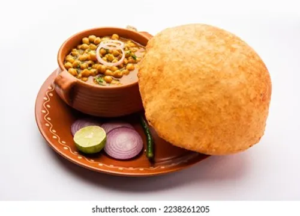

Chole Bhature

Chole Bhature Recipe
Chole Bhature is a beloved North Indian dish consisting of spicy, tangy chickpea curry (chole) served with deep-fried, puffy bread (bhature) It is a popular breakfast or dinner item, often enjoyed during festive occasions like Lohri
* **Prep Time:** 30-45 minutes
* **Cook Time:** 1 hour
* **Servings:** 4-8
* **Temperature:** High heat for frying
**Ingredients:**
* **For Chole:**
* Whole Chana Dal (Dried Chickpeas): 500 g (2 1/2 cups)
* Tea Bags (or Tea Leaves): 2 bags (or 2 tbsp)
* Cinnamon: 1 stick (4 pieces)
* Cardamom: 6 pods
* Cumin Seeds: 1/2 tbsp (for sautéing), 1 1/2 tbsp (for masala)
* Mace: 1 tsp
* Bay Leaf: 1 leaf
* Dried Red Chili: 2 qty
* Coriander Seeds: 1 tbsp
* Black Peppercorns: 1 tbsp
* Kasuri Mehthi: 1 tbsp
* Turmeric Powder: 1 tsp
* Salt: to taste
* Onion: 1 cup (puréed)
* Tomato: 2 cups (puréed)
* Ginger garlic paste: 2 tbsp
* Cilantro: 2 tbsp (chopped)
* Green Chili: 1 tbsp (chopped)
* Water: as needed
* **For Bhature:**
* Plain Flour (Maida): 2 cups (250 g)
* Semolina (Rava): 2 tbsp (25 g)
* Sugar: 1 tsp (5 g)
* Baking Soda: 1/4 tsp (1.25 g)
* Salt: 1/2 tsp (3 g)
* Oil: 2 tbsp (30 ml)
* Yogurt (Curd): 1/4 cup (60 ml)
* Water: as needed
* Oil: for deep-frying
**Equipment needed:**
* Pressure cooker or Instant Pot
* Large mixing bowl
* Measuring cups and spoons
* Saucepan or kadai
* Rolling pin
* Deep frying pan or kadai
* Slotted spoon
**Instructions:**
1. Soak 500 g (2 1/2 cups) of dried chickpeas in water overnight. If short on time, soak them in hot water for 3-4 hours
2. Boil 1 cup of water with 2 tea bags or 2 tbsp loose tea. Strain if using loose tea
3. In a pressure cooker or Instant Pot, add the soaked and drained chickpeas, prepared tea, 1 cinnamon stick, 2 cardamom pods, and enough water to cover the chickpeas. Cook on high until the first whistle, then on low for two more whistles. Let the pressure release naturally. Save some of the cooking water
4. Dry roast 1 cinnamon stick, 2 cardamom pods, 1 tsp mace, 1 tbsp black peppercorns, 1 bay leaf, 1 1/2 tbsp cumin seeds, 1 tbsp kasuri methi, 1 tsp turmeric powder, and 2 dried red chilies for 2-3 minutes. Grind into a coarse powder
5. Heat 2 tbsp oil in a pan. Sauté 1 cinnamon stick, 2 cardamom pods, and 1/2 tbsp cumin seeds. Add 1 cup onion purée and cook until lightly browned
6. Stir in 2 tbsp ginger garlic paste and sauté for 1-2 minutes. Add 2 cups tomato purée, the prepared spice powder, and salt. Cook for 15-20 minutes on low heat until reduced by about 25%
7. Mix the cooked chickpeas into the gravy. Add 2-3 tbsp of the reserved cooking water for added flavor
8. Finish with 1 tbsp chopped green chili and 2 tbsp chopped cilantro. Mix well and set aside
9. In a large bowl, combine 2 cups maida, 2 tbsp rava, 1 tsp sugar, 1/4 tsp baking soda, 1 tsp sugar, 1/2 tsp salt, and 2 tbsp oil. Mix well
10. Add 1/4 cup yogurt and mix well to combine
11. Add warm water as required and knead the dough into a smooth, soft ball
12. Grease the dough with oil, cover, and rest for 2 hours
13. After 2 hours, knead the dough slightly
14. Pinch off a ball-sized piece of dough and make a ball without cracks
15. Roll the ball slightly thick, applying oil to prevent sticking
16. Heat sufficient oil in a deep frying pan over high heat
17. Drop the rolled dough into the hot oil. Press down until the bhature puffs up and splash oil to help it puff fully
18. Flip over and fry until golden brown on both sides
19. Drain on absorbent paper and serve hot with the chole, yogurt, and pickle on the side
**Safety Notes:** Use caution when deep-frying; hot oil can splatter. Ensure the oil is hot enough before adding the dough to prevent greasiness. The bhature should puff up immediately upon contact with the hot oil
**Substitutions:**
* **Chickpeas:** Use canned chickpeas (drained and rinsed) for a quicker version, though texture will differ.
* **Yogurt:** Can be substituted with buttermilk or water, though yogurt adds tenderness.
* **Semolina (Rava):** Can be omitted, but it helps create a crispier texture.
* **Kasuri Methi:** Can be substituted with fresh fenugreek leaves, though the flavor will be different.
**Storage:** Store leftover chole in an airtight container in the refrigerator for up to 3 days. Reheat gently on the stove. Bhature is best served fresh but can be reheated in a toaster oven or skillet to restore crispness.
**Pro Tips:**
* Soaking chickpeas overnight is crucial for achieving the tender texture
* The key to puffy bhature is using hot oil and pressing down on the dough as it fries
* For a more authentic flavor, dry roast the whole spices before grinding
* The tea bag or tea leaves are a traditional addition that helps tenderize the chickpeas and enhance the flavor